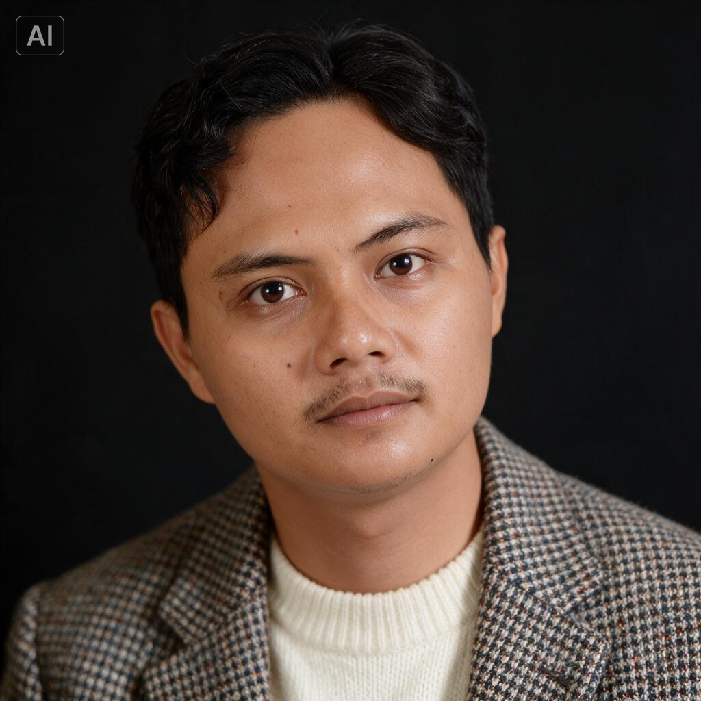

Erik Khoirul Adam
Full-Stack Laravel Developer
Membangun sistem web yang solid dari kebutuhan edukasi hingga industrial — mulai dari ujian online dan manajemen ID card, sampai otomasi laporan maintenance berbasis AI.
Siapa di Balik Layar
Full-Stack Laravel Developer dengan pengalaman membangun sistem web dari hulu ke hilir — dari edukasi hingga industrial.

Halo, saya Erik Khoirul Adam — dikenal sebagai rikchodam. Saya seorang pengembang web full-stack yang fokus pada ekosistem Laravel dan ekosistem PHP modern.
Perjalanan saya dimulai dari kebutuhan nyata: membuat sistem ujian online untuk bimbel, lalu merambah ke manajemen SDM dengan ID card generator, dan kini mengerjakan sistem manajemen maintenance di industri oleochemical yang terintegrasi dengan AI dan Telegram bot.
Setiap proyek saya kerjakan dengan pendekatan test-driven thinking, kode yang terstruktur, dan dokumentasi yang rapi. Saya percaya bahwa kode yang baik adalah yang bisa dipahami oleh orang lain — termasuk diri saya sendiri enam bulan kemudian.
Kompetensi Teknis
Proyek yang Pernah Dikerjakan
Tiga proyek Laravel dari ranah yang berbeda — edukasi, manajemen SDM, hingga sistem industrial. Masing-masing punya tantangan unik yang membuat saya terus belajar.
Teknologi yang Dikuasai
Ekosistem teknologi yang saya gunakan di tiga proyek terakhir, dari backend hingga deployment.
// Backend
// Frontend
// Database & Tools
// Libraries & Services
Perjalanan Proyek
Rentang waktu pengerjaan tiga proyek Laravel yang saya kerjakan secara berurutan sepanjang tahun 2025–2026.
Bimbel Online
Proyek pertama ekosistem Laravel 12. Sistem manajemen bimbingan belajar end-to-end: dari bank soal, ujian online real-time, absensi QR code, hingga broadcast WhatsApp multi-provider dan laporan Excel/PDF.
ID Card Generator
Proyek kedua yang fokus pada manajemen SDM: CRUD karyawan dengan soft delete, ID card generator dengan kustomisasi penuh, ekspor PNG via Browsershot, dan import/export Excel ribuan data dalam satu klik.
Oleochemical Pro
Proyek ketiga dan paling kompleks: sistem manajemen maintenance industrial dengan hierarki asset, approval flow teknisi, laporan perbaikan via Telegram bot wizard, dan AI multi-provider untuk keyword parsing dan alias management.
Mari Berkolaborasi
Punya ide, proyek, atau sekadar ingin ngobrol tentang Laravel? Jangan ragu untuk menghubungi saya.
Temukan Saya
Saya selalu terbuka untuk diskusi teknis, peluang kolaborasi, atau proyek baru yang menantang. Respons cepat via email atau LinkedIn.
“Kode yang rapi, komunikasi yang jelas, dan pengiriman tepat waktu. Senang bekerja sama.”
— Klien (proyek Bimbel Online)